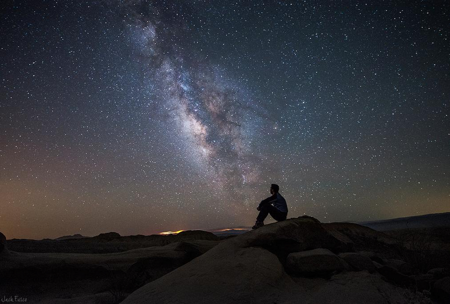
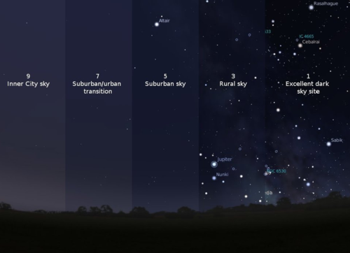

Facts
All over the world where ever you are, there are stars. On a dark and clear night, the human eye can only see about 3,000 stars.
Every star that you can see with the naked eye is brighter than our sun.
-

Why is it harder to see stars in the city?
Pollution and light pollution are the two main reason why its difficult to see stars at certain times and places. Light pollution is a very big factor when it comes to the visibility of stars. Stars are in the sky at all times but because of the light we can't always see them. In the day time we cant see the light from the stars because the sun's bright rays over power it. Also, if you are in a city full of lights from buildings and etc., even at night it can be difficult to see stars. That's why its best to see stars at night and in a very dark place with no lights. Normal pollution from cars, factories, etc. can have a similar effect. Pollution cause a gray/brown barrier of clouds in the sky and from this alone it gives the illusion of less stars than there really is.